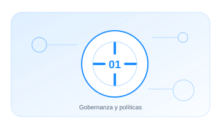

01 · PILAR
Gobernanza y políticas
Establecer cómo decide, supervisa y mejora la organización el uso de la IA.
EnfoqueTécnico, práctico y entendible
Contenido5 guías extensas y aplicables
Aplicable aOrganizaciones y sistemas reales

01.01 · GUÍA
Gobierno del SGIA
Diseña el sistema de gestión que conecta estrategia. riesgos. controles y mejora continua.
25–31 min+2.398 palabrasAbrir guía →
01.02 · GUÍA
Roles y responsabilidades
Define quién propone. aprueba. opera. supervisa y retira cada sistema de IA.
22–28 min+2.157 palabrasAbrir guía →
01.03 · GUÍA
Comité de IA
Crea un órgano útil para tomar decisiones. no una reunión meramente formal.
21–27 min+2.055 palabrasAbrir guía →
01.04 · GUÍA
Gobierno del ciclo de vida
Introduce gates y criterios de aprobación desde la idea hasta la retirada.
24–30 min+2.260 palabrasAbrir guía →
01.05 · GUÍA
Política de uso de IA PLANTILLA
Qué debe contener para que se cumpla. con plantilla descargable lista para adaptar.
22–28 min+2.097 palabrasAbrir guía →
01
DirecciónControl y evidencia aplicable
02
RolesControl y evidencia aplicable
03
DecisiónControl y evidencia aplicable
04
SupervisiónControl y evidencia aplicable
05
MejoraControl y evidencia aplicable
Cada guía incluye explicación, implantación, controles, evidencias, errores habituales, métricas y referencias.